In September 2023, Bloomberg published an article titled “Apple’s Supply Chain Is on a Collision Course With Climate Change”. Within this article, the supplier countries of the Cupertino-based company are examined. Specifically, for each of these countries, based on data from the Energy Institute, the resources used to produce their energy are highlighted. The results are depicted in the following graph:
The purpose of this project is to replicate this graph as faithfully as possible and subsequently provide an alternative representation of the data.
Libraries and data
Regarding the libraries used, we aimed to limit the use primarily to “ggplot2”. However, due to specific aspects of the graph, it was necessary to import additional libraries. As for the data, as previously mentioned, we referred to the “Statistical Review of World Energy” report by the Energy Institute. Given that this report spans over 60 pages and includes data not only for the countries featured in our graph, we proceeded to transcribe the relevant data into an Excel file. Nonetheless, the imported data serves solely an informative purpose because constructing the graph required manually inputting this data, albeit relying on the aforementioned Excel file.
Replicating the chart
Construction of the circular chart
First of all, we need to build the base of our chart. This consists of a larger circumference with three concentric circles inside, each progressively smaller. Additionally, there are also 13 equidistant spokes, one for each of the countries of interest. Initially, we assign three different variables to the number of circumferences, the number of points for each circumference, and the number of spokes. Additionally, we create a variable to which we assign a vector containing the names of the countries that will be displayed in our chart.
num_circles <- 4
num_points <- 100
num_rays <- 13
countries <- c("Indonesia", "India", "Mainland China",
"Mexico", "South Korea", "Japan",
"US", "Vietnam", "Germany",
"UK", "Thailand", "Taiwan", "Malaysia")Afterwards, we use a function that allows us to generate our concentric circles.
generate_concentric_circles <- function(num_circles, num_points) {
circles_data <- lapply(1:num_circles, function(i) {
r <- i / (num_circles + 1)
data.frame(
x = r * cos(seq(0, 2 * pi, length.out = num_points)),
y = r * sin(seq(0, 2 * pi, length.out = num_points)),
radius = r
)
})
do.call(rbind, circles_data)
}In the following code, we have a function that displays equidistant spokes originating from the center of the circle. Moreover, each spoke is associated with the name of a country from the ‘countries’ vector.
generate_rays <- function(num_rays, max_radius, countries) {
angle <- seq(0, 2 * pi, length.out = num_rays + 1)[-1]
data.frame(
x = cos(angle) * max_radius,
y = sin(angle) * max_radius,
country = rev(countries) # Inverte l'ordine dei paesi
)
}After that, we store within three different variables the data necessary to construct our circular chart.
circles_data <- generate_concentric_circles(num_circles, num_points)
max_radius <- max(circles_data$radius)
rays_data <- generate_rays(num_rays, max_radius, countries)Finally, we proceed with the graphical representation of what has been done so far.
gg_circle <- ggplot() +
geom_polygon(data = circles_data, aes(x, y, group = radius), fill = "gray92",
color = "gray") +
geom_path(data = circles_data, aes(x, y), color = "gray") +
geom_segment(data = subset(rays_data, sqrt(x^2 + y^2) <= max_radius),
aes(x = 0, y = 0, xend = x, yend = y), color = "white")
gg_circle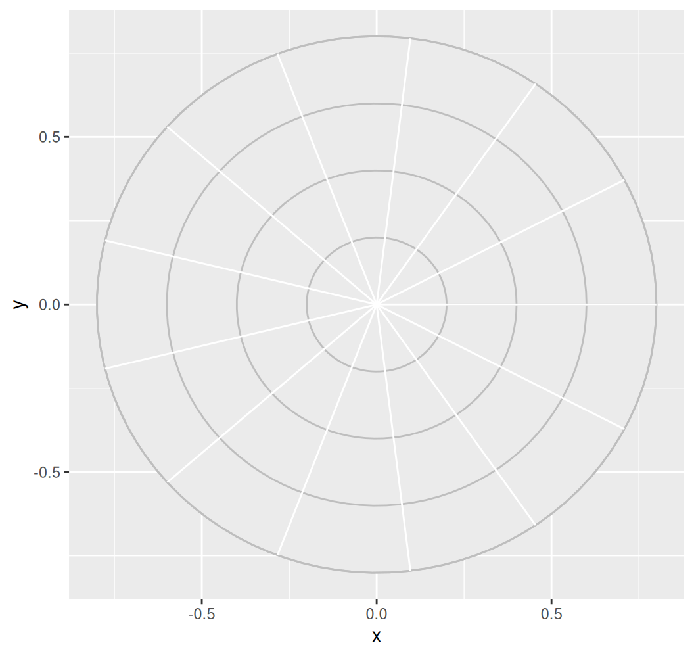
Colored areas
We now proceed with constructing the chart, adding colored areas that represent the resources used by various countries for energy production. This phase has been the most complex of the project. In fact, we experimented with several approaches, including the ‘geom_area’ option, for creating the colored areas, but none of them yielded satisfactory results. Ultimately, we chose to use “geom_polygon.” However, the main issue with using geom_polygon is that each colored area is composed of numerous small sections. This not only made the code inevitably longer but also resulted in the areas being slightly more square-shaped and less rounded compared to the original.
To create the aforementioned areas, we first created four lists, one for each colored area. Within each list, there are coordinates for each country that represent the individual colored sections. These, when summed together, will constitute the entire area.
black_areas <- list(
thailand_coal = data.frame(x = c(0, 0.023, 0.18), y = c(0, 0.15, 0.275)),
taiwan_coal = data.frame(x = c(0, 0.18, 0.275), y = c(0, 0.275, 0.14)),
malaysia_coal = data.frame(x = c(0, 0.275, 0.5), y = c(0, 0.14, 0)),
indonesia_coal = data.frame(x = c(0, 0.5, 0.53), y = c(0, 0, -0.277)),
india_coal = data.frame(x = c(0, 0.53, 0.275), y = c(0, -0.277, -0.4)),
china_coal = data.frame(x = c(0, 0.275, 0.008), y = c(0, -0.4, -0.035)),
mexico_coal = data.frame(x = c(0, 0.008, -0.082), y = c(0, -0.035, -0.225)),
south_korea_coal = data.frame(x = c(0, -0.082, -0.177), y = c(0, -0.225, -0.16)),
japan_coal = data.frame(x = c(0, -0.177, -0.152), y = c(0, -0.16, -0.04)),
us_coal = data.frame(x = c(0, -0.152, -0.3), y = c(0, -0.04, 0.075)),
vietnam_coal = data.frame(x = c(0, -0.3, -0.18), y = c(0, 0.075, 0.162)),
germany_coal = data.frame(x = c(0, -0.18, -0.01), y = c(0, 0.162, 0.025)),
uk_coal = data.frame(x = c(0, -0.01, 0.023), y = c(0, 0.025, 0.15))
)
gray_area <- list(
thailand_gas = data.frame(x = c(0.023, 0.18, 0.362, 0.075),
y = c(0.15, 0.275, 0.525, 0.65)),
taiwan_gas = data.frame(x = c(0.18, 0.275, 0.55, 0.362),
y = c(0.275, 0.14, 0.28, 0.525)),
malaysia_gas = data.frame(x = c(0.275, 0.5, 0.625, 0.55),
y = c(0.14, 0, 0, 0.28)),
indonesia_gas = data.frame(x = c(0.5, 0.53, 0.53, 0.625),
y = c(0, -0.277, -0.285, 0)),
india_gas = data.frame(x = c(0.53, 0.275, 0.3, 0.53),
y = c(-0.277, -0.4, -0.4, -0.285)),
china_gas = data.frame(x = c(0.275, 0.008, 0.06, 0.3),
y = c(-0.4, -0.035, -0.5, -0.4)),
mexico_gas = data.frame(x = c(0.008, -0.082, -0.175, 0.06),
y = c(-0.035, -0.225, -0.475, -0.5)),
south_korea_gas = data.frame(x = c(-0.082, -0.177, -0.37, -0.175),
y = c(-0.225, -0.16, -0.33, -0.475)),
japana_gas = data.frame(x = c(-0.177, -0.152, -0.45, -0.37),
y = c(-0.16, -0.04, -0.117, -0.33)),
us_gas = data.frame(x = c(-0.152, -0.3, -0.38, -0.45),
y = c(-0.04, 0.075, 0.095, -0.117)),
vietnam_gas = data.frame(x = c(-0.3, -0.18, -0.28, -0.38),
y = c(0.075, 0.162, 0.25, 0.095)),
germany_gas = data.frame(x = c(-0.18, -0.01, -0.14, -0.28),
y = c(0.162, 0.025, 0.35, 0.25)),
uk_gas = data.frame(x = c(-0.01, 0.023, 0.075, -0.14),
y = c(0.025, 0.15, 0.65, 0.35))
)
blue_area <- list(
thailand_ren = data.frame(x = c(0.075, 0.362, 0.4, 0.097),
y = c(0.65, 0.525, 0.575, 0.78)),
taiwan_ren = data.frame(x = c(0.362, 0.55, 0.7, 0.4),
y = c(0.525, 0.28, 0.37, 0.575)),
malaysia_ren = data.frame(x = c(0.55, 0.625, 0.77, 0.7),
y = c(0.28, 0, 0, 0.37)),
indonesia_ren = data.frame(x = c(0.625, 0.525, 0.675, 0.77),
y = c(0, -0.285, -0.35, 0)),
india_ren = data.frame(x = c(0.525, 0.26, 0.425, 0.675),
y = c(-0.285, -0.415, -0.62, -0.35)),
china_ren = data.frame(x = c(0.26, 0.06, 0.076, 0.425),
y = c(-0.415, -0.5, -0.67, -0.62)),
mexico_ren = data.frame(x = c(0.06, -0.175, -0.242, 0.076),
y = c(-0.5, -0.475, -0.625, -0.67)),
south_korea_ren = data.frame(x = c(-0.175, -0.40, -0.5, -0.23),
y = c(-0.475, -0.30, -0.45, -0.625)),
japan_ren = data.frame(x = c(-0.376, -0.45, -0.625, -0.5),
y = c(-0.32, -0.117, -0.15, -0.45)),
us_ren = data.frame(x = c(-0.45, -0.38, -0.775, -0.625),
y = c(-0.117, 0.1, 0.186, -0.15)),
vietnam_ren = data.frame(x = c(-0.38, -0.28, -0.55, -0.775),
y = c(0.1, 0.25, 0.482, 0.186)),
germany_ren = data.frame(x = c(-0.28, -0.141, -0.242, -0.55),
y = c(0.25, 0.35, 0.63, 0.482)),
uk_ren = data.frame(x = c(-0.141, 0.075, 0.097, -0.242),
y = c(0.35, 0.65, 0.78, 0.63))
)
yellow_ocra_area <- list(
indonesia_nuc = data.frame(x = c(0.77, 0.675, 0.707, 0.77),
y = c(0, -0.35, -0.37, 0)),
india_nuc = data.frame(x = c(0.675, 0.425, 0.45, 0.707),
y = c(-0.35, -0.62, -0.65, -0.37)),
china_nuc = data.frame(x = c(0.425, 0.076, 0.081, 0.45),
y = c(-0.62, -0.67, -0.68, -0.65)),
mexico_nuc = data.frame(x = c(0.076, -0.255, -0.275, 0.081),
y = c(-0.67, -0.615, -0.735, -0.68)),
japan_nuc = data.frame(x = c(-0.24, -0.5, -0.54, -0.275),
y = c(-0.615, -0.45, -0.475, -0.725)),
us_nuc = data.frame(x = c(-0.5, -0.625, -0.76, -0.54),
y = c(-0.45, -0.15, -0.183, -0.475)),
vietnam_nuc = data.frame(x = c(-0.625, -0.775, -0.775, -0.76),
y = c(-0.15, 0.186, 0.186, -0.183)),
germany_nuc = data.frame(x = c(-0.775, -0.55, -0.575, -0.775),
y = c(0.186, 0.482, 0.51, 0.186)),
uk_nuc = data.frame(x = c(-0.55, -0.242, -0.275, -0.575),
y = c(0.482, 0.63, 0.72, 0.51)),
thailand_nuc = data.frame(x = c(-0.242, 0.097, 0.097, -0.275),
y = c(0.63, 0.78, 0.78, 0.72)),
taiwan_nuc = data.frame(x = c(0.097, 0.4, 0.44, 0.097),
y = c(0.78, 0.575, 0.645, 0.78)),
malaysia_nuc = data.frame(x = c(0.4, 0.7, 0.7, 0.44),
y = c(0.575, 0.37, 0.37, 0.645))
)After doing this, we can visualize the graphical outcome.
gg_areas <- gg_circle + lapply(black_areas, function(area) {
geom_polygon(data = area, aes(x = x, y = y), fill = "black", color = "black", alpha = 0.9)
}) +
lapply(gray_area, function(area) {
geom_polygon(data = area, aes(x = x, y = y), fill = "dimgray", color = "dimgray", alpha = 0.9)
}) +
lapply(blue_area, function(area) {
geom_polygon(data = area, aes(x = x, y = y), fill = "blue1", color = "blue1", alpha = 0.9)
}) +
lapply(yellow_ocra_area, function(area) {
geom_polygon(data = area, aes(x = x, y = y), fill = "gold3", color = "gold3", alpha = 0.9)
})
gg_areas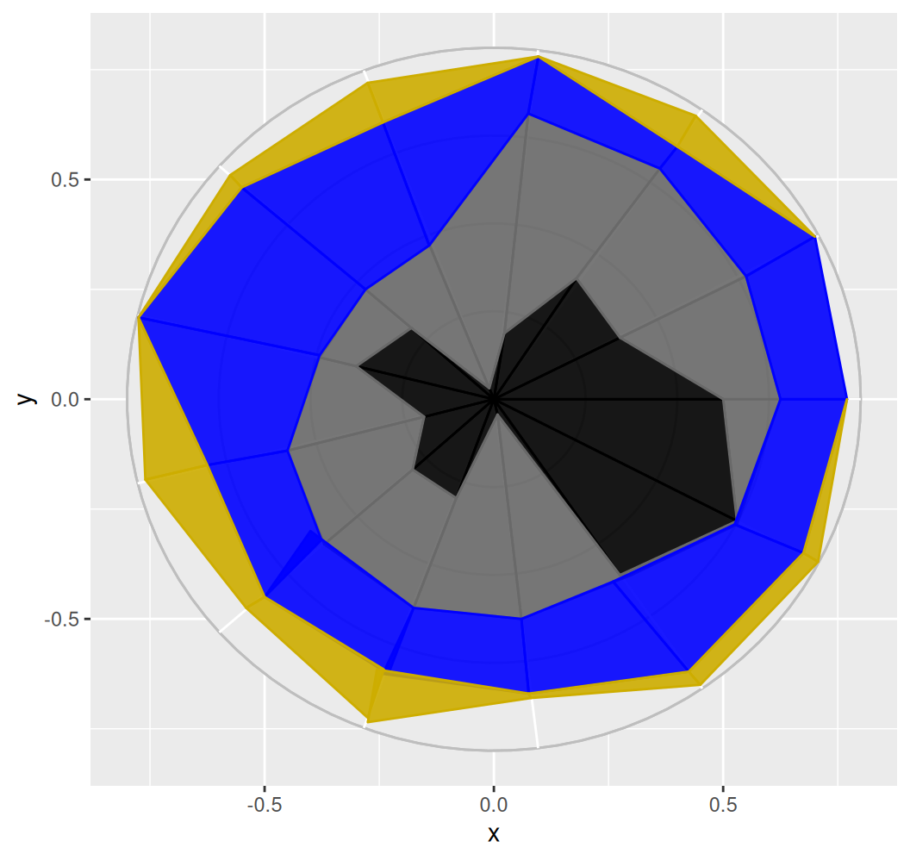
Annotate
Given that we have created the main core of our graph, let’s now proceed by adding all the details. Before doing so, in order to avoid potential display issues with some elements, we will adjust the dimensions of our graph by expanding the axes.
gg_exp <- gg_areas + coord_fixed(expand = FALSE) +
scale_x_continuous(expand = c(0, 0), limits = c(-1.2, 1.2),
breaks = seq(-1.2, 1.2, by = 0.1)) +
scale_y_continuous(expand = c(0, 0), limits = c(-1.2, 1.2),
breaks = seq(-1.2, 1.2, by = 0.1))
gg_expOnce done, let’s proceed to add various elements using ‘annotate’. Initially, we’ll add country names outside the circumference, near the reference radius. Then, we’ll add points and lines to highlight a particular energy resource. Finally, above each respective circumference, we’ll add the percentages 25%, 50%, 75%, and 100%, enhancing the interpretability of the graph.
gg_det <- gg_exp +
annotate("text", x = -0.415, y = -0.795, label = "South Korea",
size = 3.7, color = "black") +
annotate("text", x = -0.68, y = -0.557, label = "Japan",
size = 3.7, color = "black") +
annotate("text", x = 0.162, y = -0.848, label = "Mexico",
size = 3.7, color = "black") +
annotate("text", x = 0.62, y = -0.7, label = "Mainland China",
size = 3.7, color = "black") +
annotate("text", x = 0.79, y = -0.395, label = "India",
size = 3.7, color = "black") +
annotate("text", x = 0.088, y = 0.843, label = "Thailand",
size = 3.7, color = "black") +
annotate("text", x = -0.325, y = 0.794, label = "UK",
size = 3.7, color = "black") +
annotate("text", x = -0.71, y = 0.575, label = "Germany",
size = 3.7, color = "black") +
annotate("text", x = -0.884, y = 0.215, label = "Vietnam",
size = 3.7, color = "black") +
annotate("text", x = -0.843, y = -0.188, label = "US",
size = 3.7, color = "black") +
annotate("text", x = 0.52, y = 0.71, label = "Taiwan",
size = 3.7, color = "black") +
annotate("text", x = 0.818, y = 0.407, label = "Malaysia",
size = 3.7, color = "black") +
annotate("text", x = 0.92, y = 0.0079, label = "Indonesia",
size = 3.7, color = "black")+
annotate("point", x = -0.27, y = -0.73, size = 2, color = "black") +
annotate("point", x = -0.37, y = -0.33, size = 2, color = "black") +
annotate("point", x = 0.078, y = -0.67, size = 2, color = "black") +
annotate("point", x = 0.275, y = -0.395, size = 2, color = "black") +
annotate("point", x = 0.525, y = -0.276, size = 2, color = "black") +
annotate("point", x = 0.075, y = 0.645, size = 2, color = "black") +
annotate("point", x = -0.242, y = 0.63, size = 2, color = "black") +
annotate("point", x = -0.55, y = 0.482, size = 2, color = "black") +
annotate("point", x = -0.775, y = 0.186, size = 2, color = "black") +
annotate("segment", x = -0.27, y = -0.73, xend = -0.29,
yend = -0.775, color = "black", size = 0.5) +
annotate("segment", x = -0.37, y = -0.33, xend = -0.61,
yend = -0.54, color = "black", size = 0.5) +
annotate("segment", x = 0.078, y = -0.67, xend = 0.1,
yend = -0.815, color = "black", size = 0.5) +
annotate("segment", x = 0.275, y = -0.395, xend = 0.47,
yend = -0.67, color = "black", size = 0.5) +
annotate("segment", x = 0.525, y = -0.276, xend = 0.732,
yend = -0.38, color = "black", size = 0.5) +
annotate("segment", x = 0.075, y = 0.645, xend = 0.0935,
yend = 0.81, color = "black", size = 0.5) +
annotate("segment", x = -0.242, y = 0.63, xend = -0.29,
yend = 0.765, color = "black", size = 0.5) +
annotate("segment", x = -0.55, y = 0.482, xend = -0.61,
yend = 0.54, color = "black", size = 0.5) +
annotate("segment", x = -0.775, y = 0.186, xend = -0.798,
yend = 0.192, color = "black", size = 0.5) +
annotate("segment", x = -0.76, y = -0.183, xend = -0.8,
yend = -0.196, color = "black", size = 0.5) +
annotate("segment", x = 0.44, y = 0.645, xend = 0.462,
yend = 0.68, color = "black", size = 0.5) +
annotate("segment", x = 0.7, y = 0.37, xend = 0.722,
yend = 0.383, color = "black", size = 0.5) +
annotate("segment", x = 0.77, y = 0, xend = 0.816,
yend = 0, color = "black", size = 0.5)
gg_det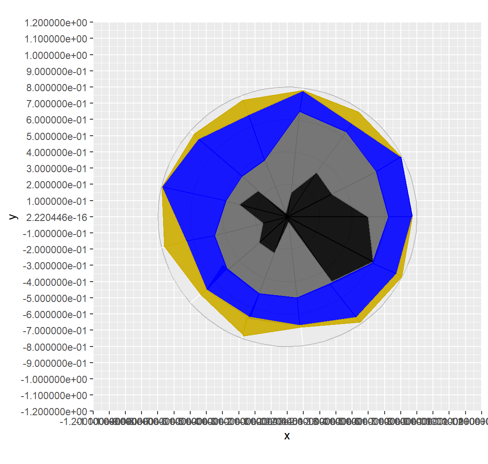
Flags
Now that we’ve added the country names, we can also include the flags. In this regard, the following code aims to import and position the flags correctly next to their respective country names. After saving the flag images in PNG format within a folder, we import them using ‘readPNG’. Subsequently, for each flag, we specify the desired coordinates on both the X and Y axes. Finally, we also indicate the dimensions we want to assign to each image.
uk_flag<- readPNG("flags/UK.png")
uk_flag_x <- -0.403
uk_flag_y <- 0.803
uk_flag_width <- 0.08
thai_flag <- readPNG("flags/Thailand.png")
thai_flag_x <- 0.21
thai_flag_y <- 0.843
thai_flag_width <- 0.08
taiwan_flag <- readPNG("flags/Taiwan.png")
taiwan_flag_x <- 0.635
taiwan_flag_y <- 0.715
taiwan_flag_width <- 0.08
mal_flag <- readPNG("flags/Malaysia.png")
mal_flag_x <- 0.95
mal_flag_y <- 0.41
mal_flag_width <- 0.084
india_flag <- readPNG("flags/India.png")
india_flag_x <- 0.89
india_flag_y <- -0.397
india_flag_width <- 0.08
china_flag <- readPNG("flags/China.png")
china_flag_x <- 0.814
china_flag_y <- -0.7
china_flag_width <- 0.077
mex_flag <- readPNG("flags/Mexico.png")
mex_flag_x <- 0.285
mex_flag_y <- -0.85
mex_flag_width <- 0.08
sk_flag <- readPNG("flags/South Korea.png")
sk_flag_x <- -0.588
sk_flag_y <- -0.796
sk_flag_width <- 0.094
jap_flag <- readPNG("flags/Japan.png")
jap_flag_x <- -0.79
jap_flag_y <- -0.557
jap_flag_width <- 0.085
us_flag <- readPNG("flags/USA.png")
us_flag_x <- -0.93
us_flag_y <- -0.19
us_flag_width <- 0.085
viet_flag <- readPNG("flags/Vietnam.png")
viet_flag_x <- -1.012
viet_flag_y <- 0.217
viet_flag_width <- 0.08
ger_flag <- readPNG("flags/Germany.png")
ger_flag_x <- -0.848
ger_flag_y <- 0.574
ger_flag_width <- 0.08
indonesia_flag <- readPNG("flags/Indonesia.png")
indonesia_flag_x <- 1.06
indonesia_flag_y <- 0.01
indonesia_flag_width <- 0.08Once that’s done, with ‘annotate_custom’, we can display the flags within our graph.
gg_flag <- gg_det + annotation_custom(
rasterGrob(uk_flag, interpolate = TRUE),
xmin = uk_flag_x - uk_flag_width / 2,
xmax = uk_flag_x + uk_flag_width / 2,
ymin = uk_flag_y - uk_flag_width / 2,
ymax = uk_flag_y + uk_flag_width / 2
) +
annotation_custom(
rasterGrob(thai_flag, interpolate = TRUE),
xmin = thai_flag_x - thai_flag_width / 2,
xmax = thai_flag_x + thai_flag_width / 2,
ymin = thai_flag_y - thai_flag_width / 2,
ymax = thai_flag_y + thai_flag_width / 2
) +
annotation_custom(
rasterGrob(taiwan_flag, interpolate = TRUE),
xmin = taiwan_flag_x - taiwan_flag_width / 2,
xmax = taiwan_flag_x + taiwan_flag_width / 2,
ymin = taiwan_flag_y - taiwan_flag_width / 2,
ymax = taiwan_flag_y + taiwan_flag_width / 2
) +
annotation_custom(
rasterGrob(mal_flag, interpolate = TRUE),
xmin = mal_flag_x - mal_flag_width / 2,
xmax = mal_flag_x + mal_flag_width / 2,
ymin = mal_flag_y - mal_flag_width / 2,
ymax = mal_flag_y + mal_flag_width / 2
) +
annotation_custom(
rasterGrob(india_flag, interpolate = TRUE),
xmin = india_flag_x - india_flag_width / 2,
xmax = india_flag_x + india_flag_width / 2,
ymin = india_flag_y - india_flag_width / 2,
ymax = india_flag_y + india_flag_width / 2
) +
annotation_custom(
rasterGrob(china_flag, interpolate = TRUE),
xmin = china_flag_x - china_flag_width / 2,
xmax = china_flag_x + china_flag_width / 2,
ymin = china_flag_y - china_flag_width / 2,
ymax = china_flag_y + china_flag_width / 2
) +
annotation_custom(
rasterGrob(mex_flag, interpolate = TRUE),
xmin = mex_flag_x - mex_flag_width / 2,
xmax = mex_flag_x + mex_flag_width / 2,
ymin = mex_flag_y - mex_flag_width / 2,
ymax = mex_flag_y + mex_flag_width / 2
) +
annotation_custom(
rasterGrob(sk_flag, interpolate = TRUE),
xmin = sk_flag_x - sk_flag_width / 2,
xmax = sk_flag_x + sk_flag_width / 2,
ymin = sk_flag_y - sk_flag_width / 2,
ymax = sk_flag_y + sk_flag_width / 2
) +
annotation_custom(
rasterGrob(jap_flag, interpolate = TRUE),
xmin = jap_flag_x - jap_flag_width / 2,
xmax = jap_flag_x + jap_flag_width / 2,
ymin = jap_flag_y - jap_flag_width / 2,
ymax = jap_flag_y + jap_flag_width / 2
) +
annotation_custom(
rasterGrob(us_flag, interpolate = TRUE),
xmin = us_flag_x - us_flag_width / 2,
xmax = us_flag_x + us_flag_width / 2,
ymin = us_flag_y - us_flag_width / 2,
ymax = us_flag_y + us_flag_width / 2
) +
annotation_custom(
rasterGrob(viet_flag, interpolate = TRUE),
xmin = viet_flag_x - viet_flag_width / 2,
xmax = viet_flag_x + viet_flag_width / 2,
ymin = viet_flag_y - viet_flag_width / 2,
ymax = viet_flag_y + viet_flag_width / 2
) +
annotation_custom(
rasterGrob(ger_flag, interpolate = TRUE),
xmin = ger_flag_x - ger_flag_width / 2,
xmax = ger_flag_x + ger_flag_width / 2,
ymin = ger_flag_y - ger_flag_width / 2,
ymax = ger_flag_y + ger_flag_width / 2
) +
annotation_custom(
rasterGrob(indonesia_flag, interpolate = TRUE),
xmin = indonesia_flag_x - indonesia_flag_width / 2,
xmax = indonesia_flag_x + indonesia_flag_width / 2,
ymin = indonesia_flag_y - indonesia_flag_width / 2,
ymax = indonesia_flag_y + indonesia_flag_width / 2
)
gg_flag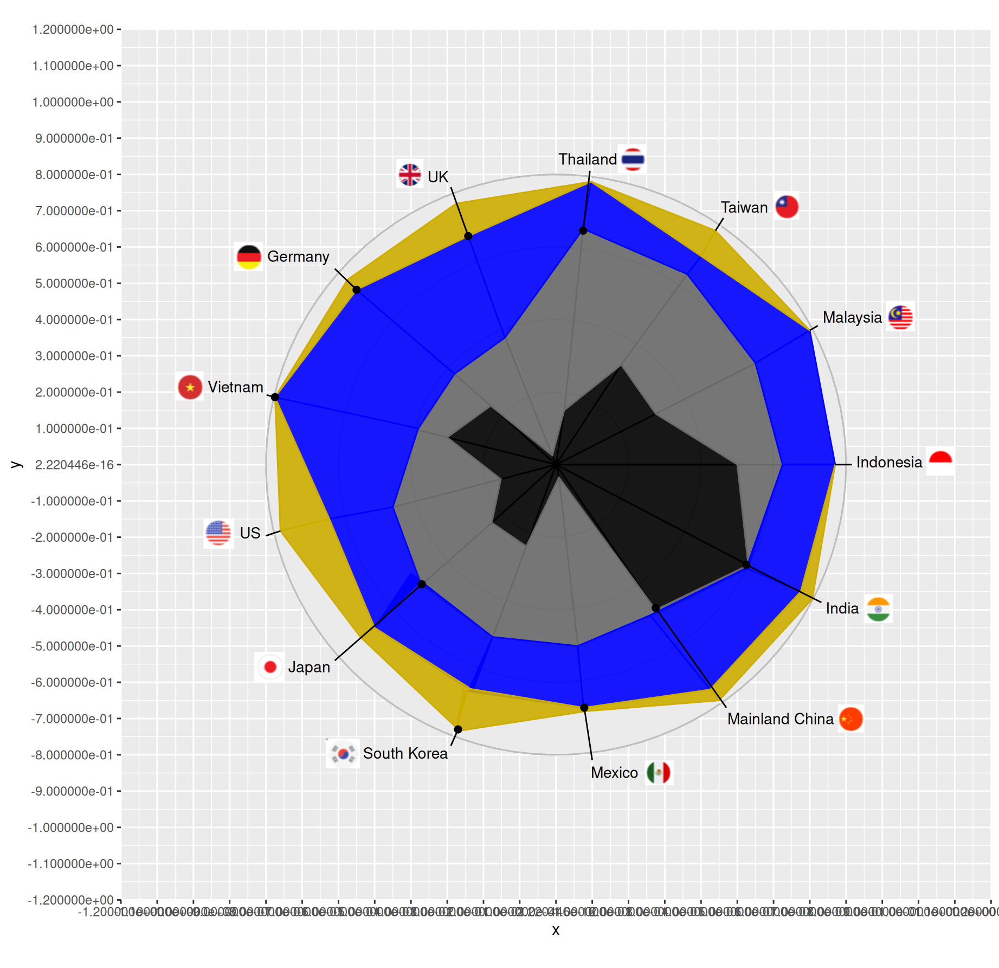
Comments
After doing that, let’s add comments related to nine out of the thirteen countries present in the graph. To do this, first, we’ll save the textual descriptions in different variables. Then, using ‘annotate’, we’ll position the comments next to their respective countries.
text_thai <- "Thailand generates 84% of its energy \nfrom fossil fuels, mostly from natural gas"
text_indonesia <- "Coal comprises 62% of \nIndonesia's energy mix "
text_india <- "India and China get most of their \nenergy from coal at 74% and 61%"
text_mexico <- "Mexico uses very little col and \ngets is energy from gas at 56%\nand renewables at 24% "
text_sk <- "Nuclear makes up 28% \nSouth Korea's energy generation "
text_japan <- "Nearly two thirds of Japan's \nenergy is from gas and coal"
text_viet <- "Half of Vietnam's energy \nis from renewables"
text_germany <- "41% of UK's and 44% of Germany's \n energy are from renewables"
gg_com <- gg_flag + annotate("text", x = 0.298, y = 0.94, label = text_thai,
size = 2.7, color = "black") +
annotate("text", x = 0.995, y = -0.085, label = text_indonesia,
size = 2.7, color = "black") +
annotate("text", x = 0.955, y = -0.525, label = text_india,
size = 2.7, color = "black") +
annotate("text", x = 0.312, y = -0.95, label = text_mexico,
size = 2.7, color = "black") +
annotate("text", x = -0.455, y = -0.897, label = text_sk,
size = 2.7, color = "black") +
annotate("text", x = -0.821, y = -0.65, label = text_japan,
size = 2.7, color = "black") +
annotate("text", x = -0.952, y = 0.111, label = text_viet,
size = 2.7, color = "black") +
annotate("text", x = -0.87, y = 0.68, label = text_germany,
size = 2.7, color = "black")
gg_comTitle and legend
To properly position and display the title and legend, let’s first move the graph a bit downwards. Once done, using ‘gg_title,’ we’ll add our title. Then, due to the complex nature of the original graph, we were compelled to manually add the legend using ‘annotate’. In fact, we started by listing the names of the energy sources, and then we placed a square of the corresponding color next to each name. Below is the code and the resulting graph.
gg_plot1 <- gg_com + theme(plot.margin = margin(t = 50, r = 0, b = 0,
l = 0, unit = "pt")) +
ggtitle("Energy Generation by Fuel Type") +
theme(plot.title = element_text(hjust = 0.5, vjust = 2,
size = 27, face = "bold")) +
annotate("text", x = -0.49, y = 1.167, label = "Coal",
size = 3.5, color = "black") +
annotate("text", x = -0.266, y = 1.167, label = "Natural gas",
size = 3.5, color = "black") +
annotate("text", x = 0.03, y = 1.167, label = "Renewables",
size = 3.5, color = "black") +
annotate("text", x = 0.28, y = 1.167, label = "Nuclear",
size = 3.5, color = "black") +
annotate("text", x = 0.465, y = 1.167, label = "Other",
size = 3.5, color = "black") +
annotate(geom = "rect", xmin = -0.55, xmax = -0.58,
ymin = 1.15, ymax = 1.18, fill = "black") +
annotate(geom = "rect", xmin = -0.39, xmax = -0.42,
ymin = 1.15, ymax = 1.18, fill = "dimgray") +
annotate(geom = "rect", xmin = -0.1, xmax = -0.13,
ymin = 1.15, ymax = 1.18, fill = "blue1") +
annotate(geom = "rect", xmin = 0.16, xmax = 0.19,
ymin = 1.15, ymax = 1.18, fill = "gold3") +
annotate(geom = "rect", xmin = 0.37, xmax = 0.4,
ymin = 1.15, ymax = 1.18, fill = "gray92")
gg_plot1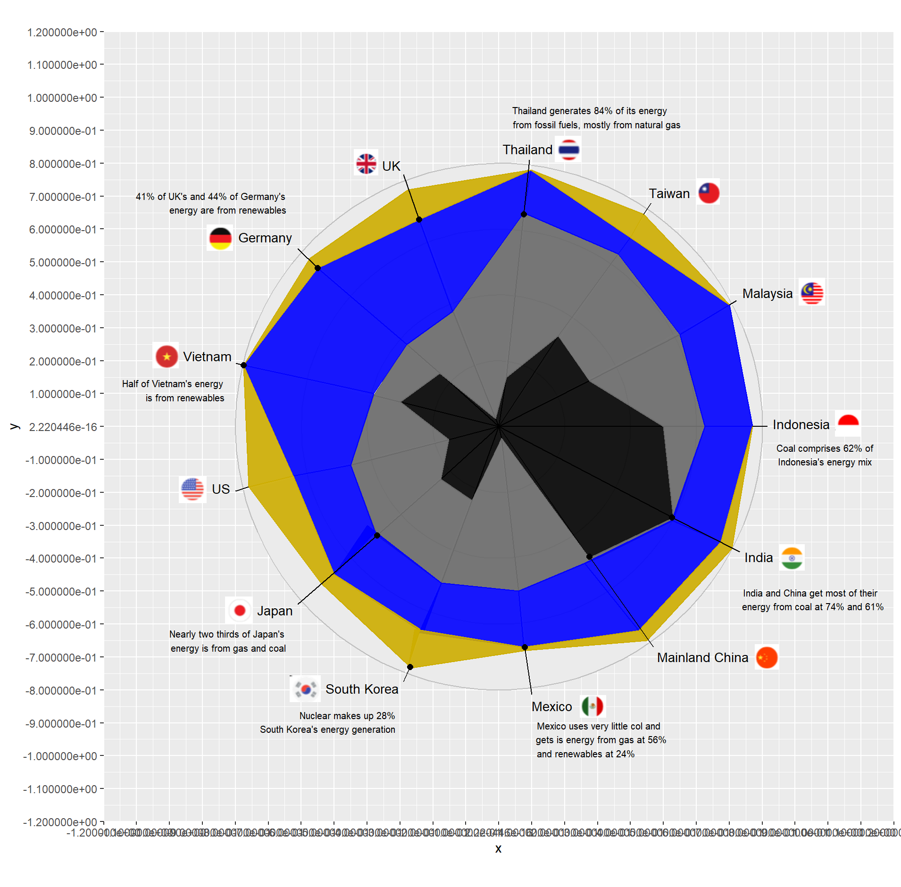
Theme
Finally, all that remains is to remove the axes and gridlines, achieving a cleaner result.
gg_fin <- gg_plot1 + theme_void() +
ggtitle("Energy Generation by Fuel Type") +
theme(plot.title = element_text(hjust = 0.5, vjust = 2,
size = 27, face = "bold"))
gg_fin
Alternative version
In this section, we present a different representation of the same data. We deemed it preferable to opt for an entirely different type of visualization rather than making improvements to the original graph. In fact, we don’t see valid reasons to use a circular chart for this data, as it makes interpretation considerably more complex. In our alternative version, we chose to represent the data using a simple stacked bar plot, which undoubtedly allows for a more immediate understanding. Further changes we made will be presented within this section.
Libraries and data
Also in this case, we begin by importing the necessary libraries and the Excel file that we will use to access the data, which we will then manually enter. Compared to the previous graph, we have chosen to group the available data differently. In this version, we include coal and natural gas under the broader category of ‘fossil fuels.’ We haven’t made any changes to either the ‘renewable’ sources or ‘nuclear’ energy. Although many consider nuclear energy a clean source, according to the European Union, due to the use of uranium, it cannot be classified as renewable energy. Finally, we have also retained the ‘Other’ category as residual energy sources. We have made this reclassification because, in the current era, rather than detailing the various sources, it is more important to distinguish between polluting fossil fuels and renewable ones. This way, it will be easier to immediately understand which countries are more virtuous and which ones still need to take steps towards a greener energy approach.
library(ggplot2)
library(reshape2)
library(readxl)
data <- read_excel("Data.xlsx")
dati <- data.frame(
Country = c("China", "Germany", "India", "Indonesia", "Japan", "Malaysia",
"Mexico", "South Korea", "Taiwan", "Thailand", "United Kingdom",
"United States", "Vietnam"),
Other = c(1, 4, 0, 3, 14, 1, 11, 1, 4, 1, 3, 1, 0),
Nuclear = c(5, 5, 3, 0, 4, 0, 4, 9, 8, 0, 11, 19, 0),
Renewables = c(30, 44, 21, 19, 21, 21, 24, 28, 8, 15, 41, 21, 50),
Fossil_fuels = c(64, 47, 76, 78, 61, 78, 61, 62, 80, 84, 45, 59, 50)
)Coordinates and axes
Now, let’s proceed with creating our graph. We’ll begin by plotting a Cartesian plane, where numerical values will be represented on the X-axis, while we’ll list the thirteen countries on the Y-axis. These countries have been ordered based on the data so that those primarily generating energy from fossil fuel sources are positioned lower, and as we move upwards, we find those utilizing a more substantial percentage of renewable sources and other sources, besides the more polluting ones.
custom_order <- c(
"Thailand", "Taiwan", "Indonesia", "Malaysia", "India",
"China", "South Korea", "Mexico", "Japan", "United States", "Vietnam",
"Germany", "United Kingdom"
)
dati_long <- melt(dati, id.vars = "Country")
dati_long$Country <- factor(dati_long$Country, levels = custom_order)
p <- ggplot(dati_long, aes(x = value, y = Country, fill = variable))
p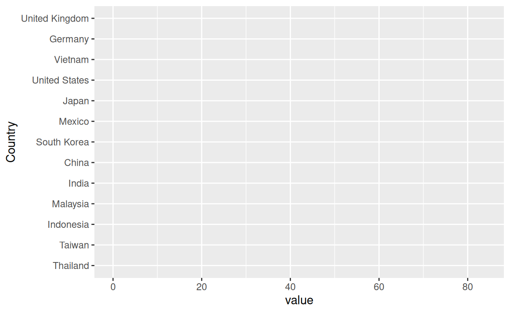
Now let’s continue building the graph by adding the bars with the legend.
p + geom_bar(stat = "identity", width = 0.95)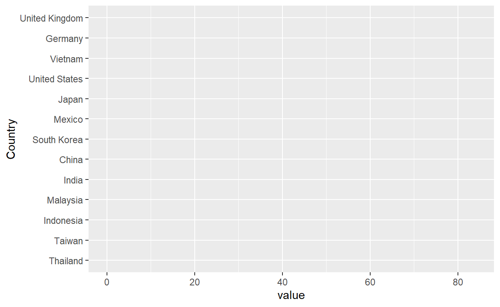
Afterward, we’ll change the colors associated with each energy source. Compared to the original graph, we have chosen different colors that are more visible and distinguishable from each other. Specifically, we relied on the ‘YlGnBu’ palette from the RColorBrewer package.
p <- p +
geom_bar(stat = "identity", width = 0.83) +
scale_fill_manual(values = c(
Other = "#474a35",
Nuclear = "#edf8b1",
Renewables = "#7fcdbb",
Fossil_fuels = "#2c7fb8"
), labels = c(
Other = "Other",
Nuclear = "Nuclear",
Renewables = "Renewables",
Fossil_fuels = "Fossil fuels"
))
p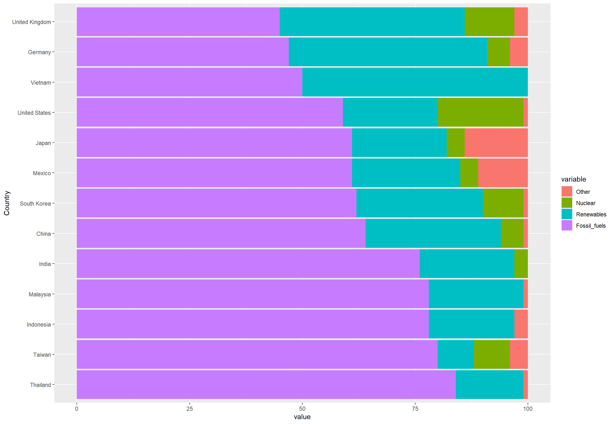
Then, we simplified the graph by removing the axis titles and changing the theme.
p <- p +
labs(title = "", x = "", y = "") +
theme_minimal()
p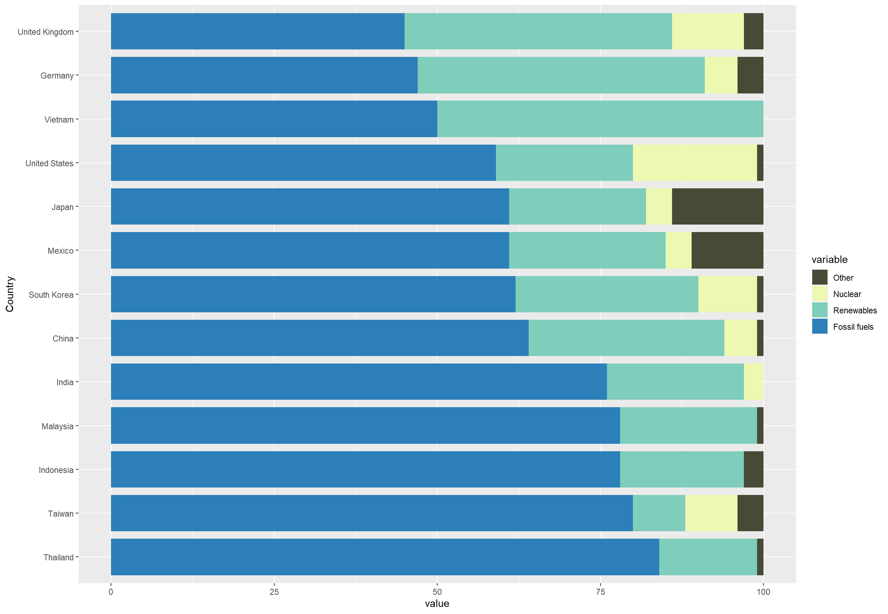
Later on, we made some minor adjustments to enhance the visual appearance. Initially, we changed the font of the axis labels, making them bold for better visibility, and additionally italicized the country names to give them a more refined look. Then, we highlighted both axes to facilitate data interpretation. Finally, we made some modifications to the legend, moving it to the top center in a horizontal position, and changing the text font.
p <- p +
theme(axis.text.x = element_text(angle = 0, vjust = 0.5, hjust = 1, family = "Arial", face = "bold"),
axis.text.y = element_text(family = "Arial", face = "bold.italic"),
axis.title = element_text(family = "Arial", face = "bold"),
axis.line = element_line(color = "black"),
panel.grid = element_blank(),
legend.title = element_text(face = "bold", family = "Arial"),
legend.text = element_text(family = "Arial"),
legend.position = "top",
legend.box = "horizontal")
p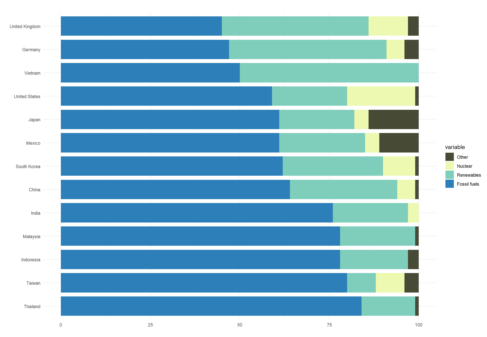
Afterward, we made some changes to the X-axis, displaying the percentages, which undoubtedly makes interpretation easier, and limiting its length.
p <- p +
scale_x_continuous(
labels = c("0%", "25%", "50%", "75%", "100%"),
breaks = c(0, 25, 50, 75, 100),
limits = c(0, 100),
expand = c(0, 0)
)
p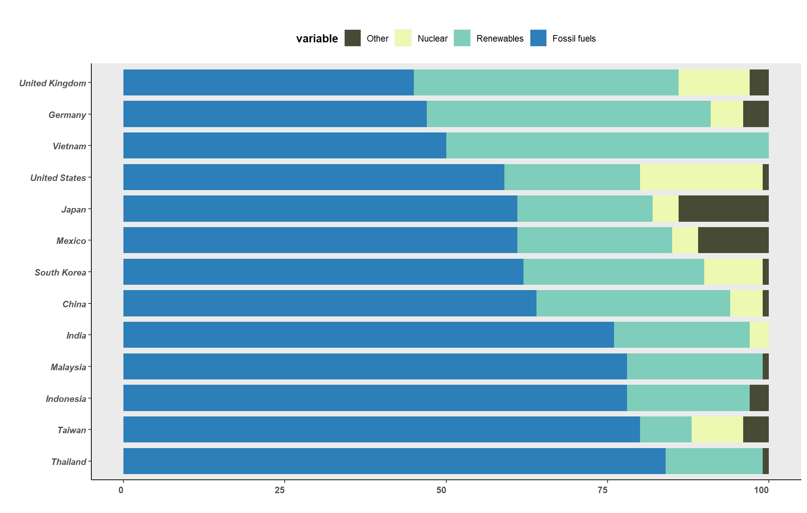
Furthermore, in order to make interpreting the graph even simpler, especially concerning the percentage of energy from sources other than fossil fuels, we added dashed vertical lines corresponding to the 25%, 50%, and 100% percentages.
p <- p +
geom_vline(xintercept = c(25, 50, 75), linetype = "dashed", color = "black", alpha = 0.4)
pLet’s proceed further by refining some details, removing the title from the legend.”
p <- p +
guides(fill = guide_legend(reverse = TRUE, title = NULL))
p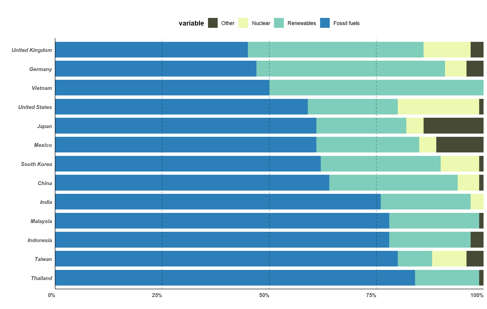
Finally, let’s complete the graph by adding the title in the appropriate position.
p +
ggtitle("Energy Generation by Fuel Type") +
theme(plot.title = element_text(hjust = 0.5, vjust = 2, size = 27, face = "bold"))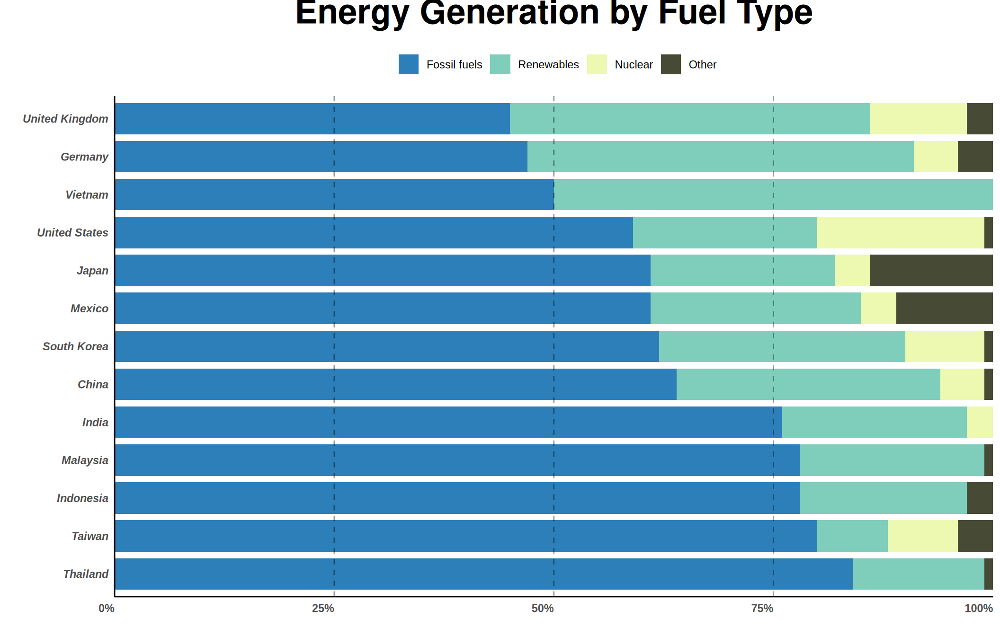